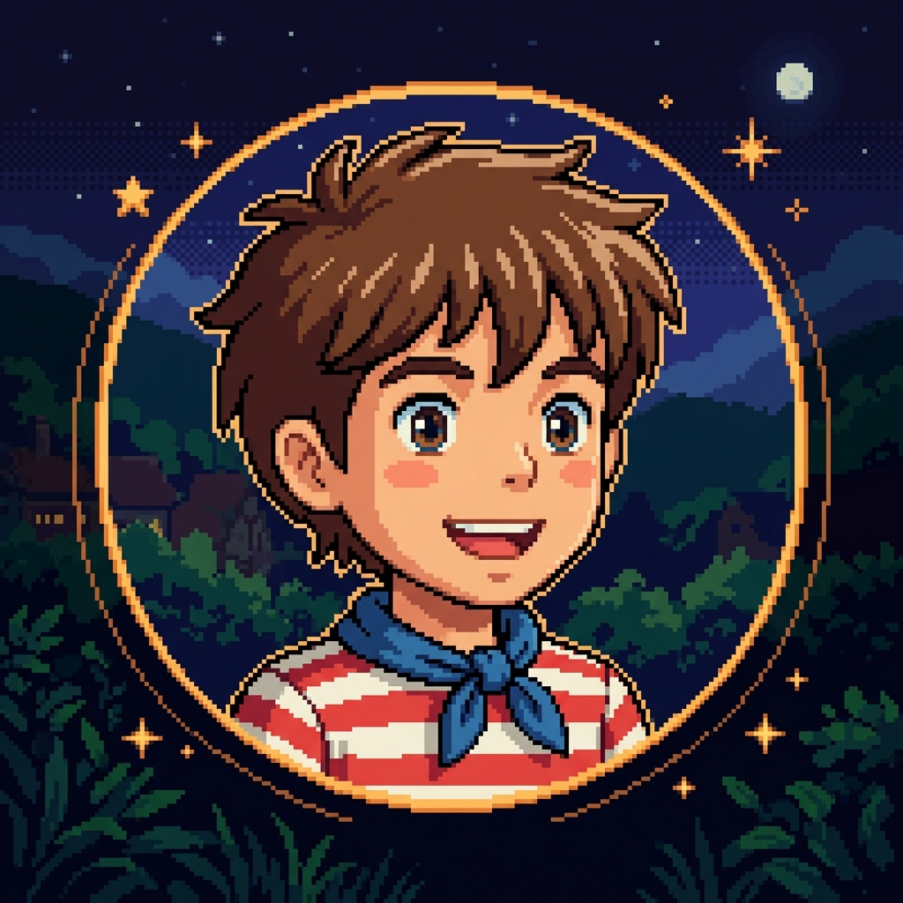

?
[ Click / Tap to Wake ]
[ Swipe to Cut ]
CRASH LANDING
×

Name:
Laurence Kim
Email:
laurencekim11242@gmail.com
Location:
Someplace in Calilifornia
PLANET SURFACE LINK
⚡ STATION: GREEN-LANDING-1
Environment:
Green Ground, Geysers, Water Pools
Life Forms:
NONE DETECTED (NO LIFE)
Explorer:
Laurence Kim
🎮 GAMES & PROJECT PAGES
Animation Brawl
High-energy pixel art brawl game.
LAUNCH GAME
Halli Galli
Fast-paced retro card matching game.
LAUNCH GAME